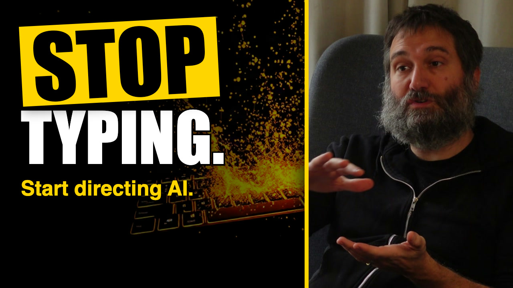
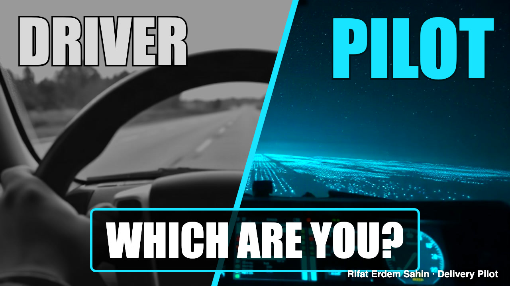

🖼️ Thumbnails: A/B/C test
Always three completely different thumbnails, so each one tests a different idea (not just a colour change). YouTube Studio's Test & Compare accepts three.
A300 Bots / 1 Pilot

Look: Specific number + open question, face card, red on dark
Hypothesis: A surprising number from the interview plus a question creates a curiosity gap.
BStop Typing.

Look: Imperative, big face, yellow on black
Hypothesis: A command that interrupts a habit; a large face adds human trust.

CDriver / Pilot: Which are you?

Look: No face, cyan split screen
Hypothesis: Self-identification ("which am I?") works without a face and stands out in a feed of faces.

How to run the test
- YouTube Studio, open the video, Thumbnail, Test & Compare, upload A, B and C
- Let it run until YouTube names a winner (it optimises for watch time share)
- Keep the winner; write the result below
- Next video: three new concepts, informed by what won
Results
Click a cell to type. Saved in this browser.
| Thumbnail | Impressions | Click-through | Watch time share | Winner? |
|---|---|---|---|---|
| A | ||||
| B | ||||
| C |
v0.13.1 · built from the project data by scripts/13_build_site.py · source